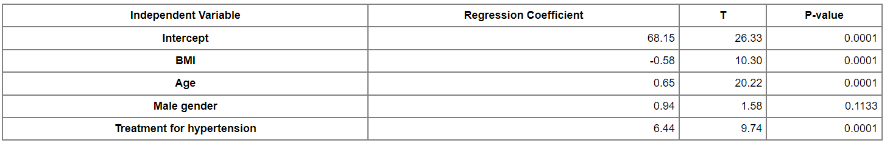

{kind=link}
d = read.csv('https://bryantstats.github.io/math461/assignments/HospitalCosts.csv')
model = lm(TOTCHG~AGE + LOS, data = d)
summary(model)Assignment 2: Multiple Linear Models
Submission: Screenshot your written answers for Question 1 to 4. For Question 5, answer the questions and include the screenshots to support your answers.
Question 1.
Suppose we want to assess the relation between systolic blood pressure and the following predictors/independent variables
- BMI,
- age (a continuous variable, measured in years),
- male gender (yes/no), and
- treatment for hypertension (yes/no).
For analytic purposes, treatment for hypertension is coded as 1=yes and 0=no. Gender is coded as 1=male and 0=otherwise.
A multiple regression analysis reveals the following:

Write the equation of the regression model
Which variable is the most significant variable according to the t-test? Which variable is the least significant variable?
Estimate the blood pressure of a 50 year old male, with a BMI of 25 who is not on treatment for hypertension.
Question 2. Generalized F-test
The following two models were fit to 18 observations:
Model 1: \(y = \beta_0 + \beta_1 x_1 + \beta_2 x_2 + \epsilon\)
Model 2: \(y = \beta_0 + \beta_1 x_1 + \beta_2 x_2 + \beta_3 x_1x_2 +\beta_4 x_1^2 +\beta_5 x_2^2 + \epsilon\)
The result of the regression are:
| Model Number | Error/Residual Sum of Squares (RSS) | Regression Sum of Squares |
|---|---|---|
| 1 | 102 | 23 |
| 2 | 78 | 47 |
Calculate the value of the F-statistics used to test the hypothesis that \(\beta_3 = \beta_4 =\beta_5 = 0\)
Question 3. Generalized F-test
You are determining the relationship of salary (\(y\)) to experience (\(x_1\)) for both men (\(x_2 = 1\)) and woman (\(x_2=0\)). You fit the model
\[y = \beta_0 + \beta_1 x_1 + \beta_2 x_2 + \beta_3 x_1x_2 + \epsilon\]
Given that the number of observations is 100. You are given the following regression results.
| Sources | Sum of Squares | Degree of Freedom |
|---|---|---|
| Regression | 330.0117 | 3 |
| Error (Residual) | 12.8156 | 7 |
You also fit the below model to the same observations.
\[y = \gamma_0 + \gamma_1 x_1 + \epsilon\] You are given
| Sources | Sum of Squares | Degree of Freedom |
|---|---|---|
| Regression | 315.0992 | 1 |
| Error/Residual | 27.7281 | 9 |
Determine the F-ratio to test whether the linear relationship between salary and experience is identical for men and women.
Question 4. Generalized F-test
A professor ran an experiment in three sections of a psychology courses to show that the more digits in a number, the more difficult it is to remember. The following variables were used in a multiple regression:
\(x_1=\) number of digits in the number
\(x_2 = 1\) if student was in section 1, 0 otherwise
\(x_3 = 1\) if student was in section 2, 0 otherwise
\(y=\) percentage of students correctly remembering the number
You are given
- A total of 42 students participated in the study
- The regression equation \[y = \beta_0 + \beta_1 x_1 + \beta_2 x_1^2 + \beta_3 x_2 +\beta_4 x_3 + \epsilon\] was to fit the data and resulted in \(R^2 = 0.940\)
- A second regression equation \(y = \gamma_0 + \gamma_1 x_1 + \gamma_2 x_1^2+\epsilon\) was to fit to the data and resulted \(R^2 = 0.915\)
Determine the F statistic used to test whether class section is significant variable.
Question 5. Generalized F-test in R
In this question, we will examine the hospital cost of patients in Wisconsin in 2003 using patients’ information such as their age, gender, and their length of stay at the hospital. The data and the variables description can be downloaded at the below links.
- Let regress the total charge (
TOTCHG) on age and length of stay.
- We now can use the model to predict the total charge of a 13-year-old that stays a week at a hospital.
predict(model, list(AGE = 13, LOS = 7))- Predict the the total charge of a 21-year-old that stays two weeks at a hospital.
- Let consider the two following models and run the F-test to test the significant of the full model.
full_model <- lm(TOTCHG~ LOS + factor(GENDER) + factor(RACE) + AGE + APRDRG, data = d)
reduced_model <- lm(TOTCHG~ LOS + factor(GENDER) + factor(RACE) , data = d)
anova(reduced_model, full_model)- Is the full model statistically significant comparing with the reduced model?
- Consider another reduced model where
TOTCHGis regressed on length of stay (LOS), gender, race and age. Is the full model statistically significant comparing with the reduced model? Report the p-value of the test.